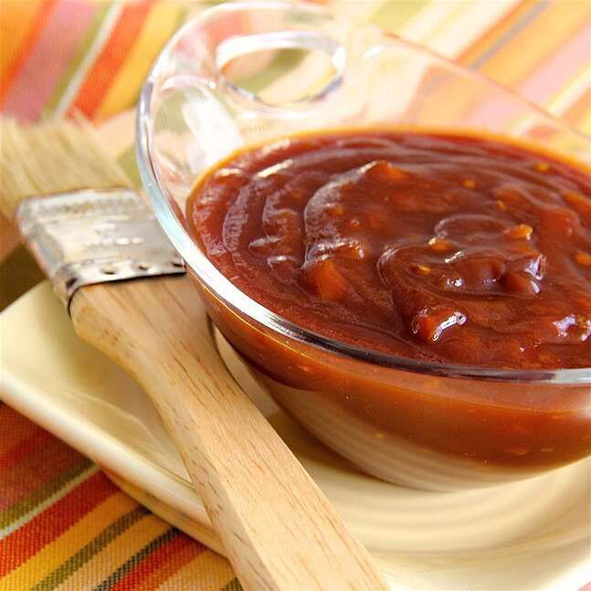

bbqsauce

This delicious homemade BBQ sauce recipe has been passed down and you will find it can be used on anything from ribs, brisket, chicken and burgers. ENJOY!!
Ingredients
- 8 TBSP Butter
- 4 med onion (chopped fine)
- 4 clove garlic (chopped fine)
- 2 cuo celery (chopped fine)
- 3 cups water
- 4 cups ketchup
- 8 TBSP vinegar
- 8 TBSP worchestershire Sauce
- 8 TBSP brown sugar
- 4 tsp Salt
- 4 tsp pepper
- 4 tsp lempn juice